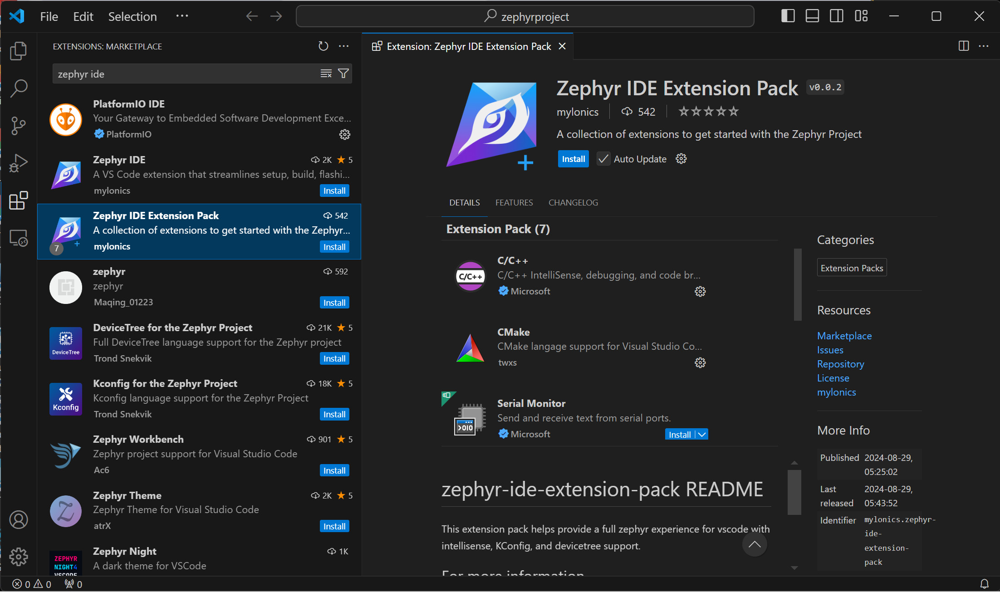
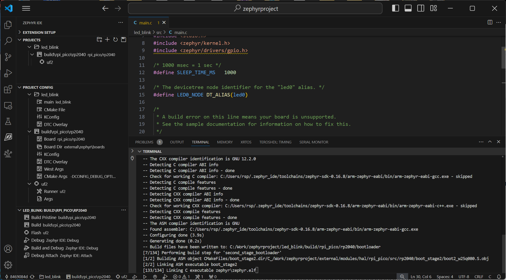

แนะนำการใช้งาน Zephyr IDE สำหรับ VS Code IDE#
Keywords: Zephyr RTOS, Zephyr IDE, Extension Pack for VS Code IDE, RP2040, Raspberry Pi Pico
▷ การติดตั้ง Zephyr IDE#
Zephyr RTOS เป็นระบบปฏิบัติการเวลาจริงที่เปิดเผยซอร์สโค้ด รองรับการใช้งานชิปตัวประมวลผลหลายชนิด เช่น ARM, RISC-V และอื่นๆ โดยปรกติแล้วการเขียนโค้ดภาษา C สำหรับอุปกรณ์หรือระบบสมองกลฝังตัว โดยใช้ Zephyr RTOS จะต้องมีการติดตั้งและใช้งานโปรแกรมแบบ Command Line Tools (สำหรับระบบปฏิบัติการ Ubuntu | mac OS | Windows) อย่างเช่น
- West สำหรับ Zephyr เป็นโปรแกรมที่ทำงานด้วยภาษา Python
ที่ช่วยในการจัดการดาวน์โหลดไฟล์จาก Git และการสร้างโปรเจค Zephyr
โดยใช้คำสั่งต่าง ๆ สำหรับการสร้าง (
init) คอมไพล์โค้ด (build), การเตรียม (flash), และการดีบัก (debug) - Zephyr SDK (Software Development Kit): คือชุดเครื่องมือที่จำเป็นสำหรับการพัฒนาซอฟต์แวร์บน
Zephyr RTOS โดยมีเครื่องมือต่าง ๆ เช่น CMake, Python, C/C++ Toolchains
และ Devicetree Compiler (
dtc) ที่จำเป็นสำหรับการทำงานกับ Zephyr รวมถึงโค้ดตัวอย่าง
Zephyr IDE เป็นส่วนเสริมหรือ Extension Pack สำหรับ VS Code IDE ที่จะช่วยให้การใช้งานและเขียนโค้ดด้วย Zephyr RTOS ทำงานได้ง่ายขึ้น
บทความนี้จะนำเสนอขั้นตอนการติดตั้งเครื่องมือสำหรับพัฒนา Zephyr RTOS บน Windows และแนะนำให้ติดตั้งโปรแกรมที่มีชื่อว่า Chocolatey ซึ่งเป็นเครื่องมือสำหรับติดตั้งแพคเกจซอฟต์แวร์ต่างๆ ที่โดยปรกติแล้วจะใช้สำหรับ Linux แต่นำมาใช้ได้บน Windows
- ติดตั้ง Chocolatey สำหรับผู้ใช้ทั่วไป
- เข้าเว็บไซต์สำหรับติดตั้ง Chocolatey: https://chocolatey.org/install
- ทำตามขั้นตอนการติดตั้งตามที่เว็บไซต์แนะนำ (ให้ทำคำสั่งใน PowerShell ที่เปิดใช้งานในโหมด Administrator)
- ตรวจสอบเวอร์ชั่นของ Chocolatey
- เปิดหน้าต่างคำสั่ง ในโหมดผู้ดูแลระบบ (Administrator) แล้วพิมพ์คำสั่ง
choco -vและกดEnterผลลัพธ์ที่ได้ควรแสดงเวอร์ชั่นของ Chocolatey ที่ได้ติดตั้งไว้ (ตัวอย่างเช่น2.4.1) - อนุญาตการติดตั้งแพคเกจโดยไม่ต้องยืนยันซ้ำ:
พิมพ์คำสั่ง
choco feature enable -n allowGlobalConfirmationและกดEnterคำสั่งนี้จะช่วยให้ไม่ต้องยืนยันการติดตั้งแพคเกจทุกครั้งที่ใช้คำสั่งchoco install - ติดตั้งเครื่องมือที่จำเป็น: พิมพ์คำสั่งต่อไปนี้ทีละบรรทัด (กด
Enterหลังจากพิมพ์แต่ละบรรทัด)
choco install cmake --installargs 'ADD_CMAKE_TO_PATH=System'
choco install ninja gperf python311 git dtc-msys2 wget 7zip openocd
รูป: ตัวอย่างข้อความจากการทำคำสั่งติดตั้งโปรแกรมด้วย Chocolatey ใน Windows PowerShell (Admin)
เครื่องมือที่ได้ติดตั้งสำหรับการใช้งาน ได้แก่
cmake: เครื่องมือสร้างระบบ (build system)ninja: เครื่องมือสร้างโปรแกรม (build tool)gperf: เครื่องมือสร้างตัวแยกและวิเคราะห์ข้อความ (string parser)python311: Python v3.11 (Zephyr RTOS อาจต้องการเวอร์ชันของ Python เฉพาะเจาะจง และแตกต่างจากเวอร์ชันนี้)git: เครื่องมือควบคุมเวอร์ชัน (version control system)dtc-msys2: เครื่องมือสำหรับแปลง Device Treewget: เครื่องมือดาวน์โหลดไฟล์7zip: เครื่องมือสำหรับจัดการไฟล์เก็บถาวรopenocd: เครื่องมือสำหรับดีบักและแฟลชบอร์ดเป้าหมาย
จากนั้นให้เปิดใช้งาน VS Code IDE (หากยังไม่มีในระบบ ให้ติดตั้งโปรแกรมนี้ก่อน) แล้วจึงค้นหาส่วนเสริม Zephyr IDE แล้วติดตั้งใช้งาน
- ดาวน์โหลดและติดตั้ง Visual Studio Code (VS Code)
ไปที่
https://code.visualstudio.com/ดาวน์โหลดไฟล์ติดตั้งไฟล์สำหรับ Windows เปิดไฟล์ที่ดาวน์โหลดมาและทำตามขั้นตอนการติดตั้งตามปกติ - ติดตั้ง Zephyr IDE Extension Pack โดยเปิด VS Code แล้วเปิดส่วนขยาย หรือกด
Ctrl+Shift+Xบนคีย์บอร์ด เพื่อค้นหา Zephyr IDE แล้วติดตั้งโดยกดคลิกปุ่ม "Install"
ในกรณีที่ใช้ Windows PowerShell: $env:HOMEPATH เป็นตัวแปรของระบบที่อ้างอิงไดเรกทอรี Home ของผู้ใช้ปัจจุบัน
และไฟล์ต่าง ๆ ของ Zephyr IDE จะถูกติดตั้งไว้ในไดเรกทอรี $env:HOMEPATH\.zephyr_ide
ตัวอย่างขั้นตอนการติดตั้ง Zephyr IDE Extension Pack มีดังนี้

รูป: การติดตั้ง "Zephyr IDE Extension Pack"
ถัดไปเป็นการสร้าง Workspace เพื่อใช้งานสำหรับ Zephyr Project
รูป: การกดปุ่มสร้าง Workspace (ผู้ใช้อาจจะเลือกสร้างหรือเปลี่ยนไดเรกทอรีสำหรับ Workspace ตามต้องการ)
รูป: การกดปุ่ม Initialize Workspace (ให้ผลเหมือนการทำคำสั่ง west init)
รูป: การเลือกติดตั้งแบบ Minimal Zephyr (Selected Desired HALs)
รูป: การคลิกเลือกใช้ HALs (Hardware Abstraction Layers) ของบริษัทต่าง ๆ ที่ต้องการเลือกใช้ (บางตัวเลือก)
รูป: การเลือกเวอร์ชันของ Zephyr (ในตัวอย่างได้เลือกใช้ Zephyr v4.0.0)
รูป: การคลิกเลือก C/C++ Toolchains ที่ต้องการใช้งาน (บางตัวเลือก)
รูป: การทำขั้นตอน West Update (ให้ผลเหมือนการทำคำสั่ง west update)
รูป: ตัวอย่างข้อความจากการทำงานในขั้นตอน West Update
รูป: ตัวอย่างไฟล์ west-manifest/west.yml
▷ การสร้างโปรเจกต์ใหม่ใน Zephyr IDE สำหรับบอร์ด Raspberry Pi Pico#
เมื่อได้เตรียม Workspace แล้ว ถัดไปให้สร้างโปรเจกต์ใหม่ โดยเลือกจากโปรเจกต์ตัวอย่าง (Select Sample Project)

รูป: การสร้างโปรเจกต์ใหม่ เช่น เลือกจากโปรเจกต์ตัวอย่าง basic\blinky
และตั้งชื่อโปรเจกต์เป็น led_blink
รูป: เพิ่ม Build สำหรับโปรเจกต์ led_blink และจะต้องระบุไดเรกทอรีที่จะใช้สำหรับ Build
รูป: เลือกบอร์ดไมโครคอนโทรลเลอร์ที่ต้องการใช้
ในตัวอย่างนี้ได้เลือกบอร์ด Raspberry Pi Pico (RP2040) (rpi_pico\rp2040)
รูป: เลือก Build Configuration สำหรับ Debug
รูป: เพิ่ม Runner สำหรับ Build ของโปรเจกต์ led_blink โดยเลือกใช้ uf2
ในกรณีตัวอย่าง (อัปโหลดไฟล์เฟิร์มแวร์ที่ได้จากขั้นตอน Build ไปยังบอร์ดไมโครคอนโทรลเลอร์
RPi Pico ด้วยวิธีสำเนาไฟล์ UF2)

รูป: ทำขั้นตอน Zephyr IDE Build สำหรับโปรเจกต์ (ครั้งแรกให้ทำ "Build Pristine")
รูป: ทำขั้นตอน Zephyr IDE Flash ด้วยวิธี UF2
หากมีอุปกรณ์ CMSIS-DAP / SWD Debug Probe ก็สามารถเลือก OpenOCD เพิ่มเป็นอีกตัวเลือกสำหรับ Runner
รูป: ทำขั้นตอน Zephyr IDE Flash ด้วยวิธี OpenOCD
รูป: ตัวอย่างการใช้อุปกรณ์ Waveshare Zero RP2040 เป็น CMSIS-DAP / SWD Debug Probe และใช้งานร่วมกับบอร์ด RP2040 (ทำงานได้เหมือนบอร์ด Raspberry Pi Pico)
ถ้าสามารถทำขั้นตอน Zephyr IDE Flash ได้ถูกต้อง จะเห็นว่า LED บนบอร์ดทดลอง จะกระพริบด้วยอัตราคงที่
▷ กล่าวสรุป#
บทความนี้ได้นำเสนอขั้นตอนการติดตั้งและใช้งาน Zephyr IDE ซึ่งเป็นส่วนขยายสำหรับ
VS Code IDE โดยได้ทดลองใช้งานกับระบบปฏิบัติการ Windows 11
และเลือกทดสอบการเขียนโค้ดด้วย Zephyr RTOS ตามโปรเจกต์ตัวอย่างพื้นฐาน LED Blink (blinky)
สำหรับบอร์ด Rasbperry Pi Pico
เอกสารและเว็บไซต์สำหรับอ้างอิงและศึกษาเพิ่มเติม
This work is licensed under a Creative Commons Attribution-ShareAlike 4.0 International License.
Created: 2024-12-12 | Last Updated: 2024-12-12